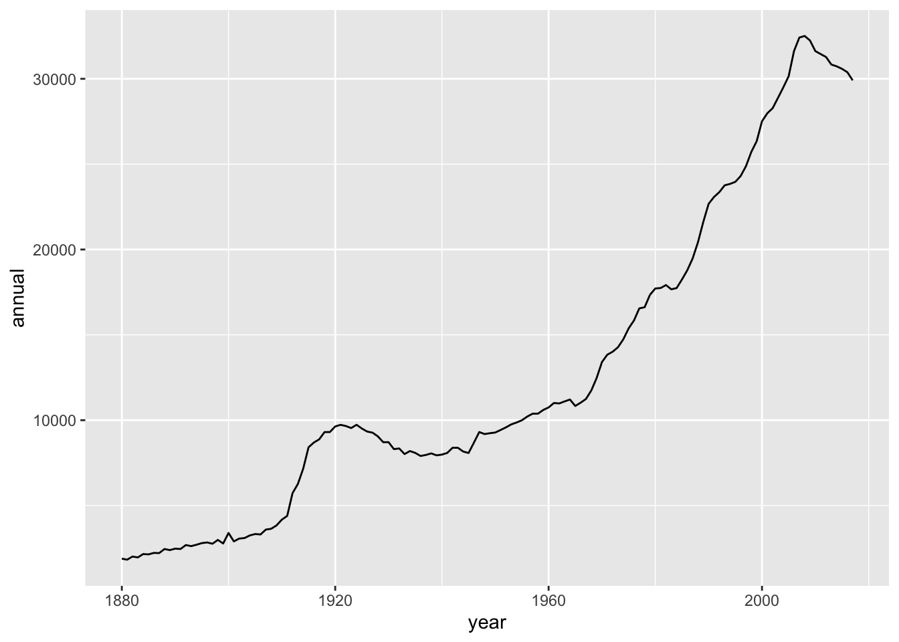

Chapter 3 how many ‘z’ names since 2000?
babynames %>%
filter(year > 2000 & str_detect(name, "Z")) %>%
arrange(desc(prop))## # A tibble: 13,018 × 5
## year sex name n prop
## <dbl> <chr> <chr> <int> <dbl>
## 1 2001 M Zachary 18186 0.00880
## 2 2002 M Zachary 16622 0.00805
## 3 2003 M Zachary 15539 0.00740
## 4 2004 M Zachary 13711 0.00649
## 5 2005 M Zachary 12283 0.00578
## 6 2006 M Zachary 11005 0.00502
## 7 2007 M Zachary 10212 0.00461
## 8 2008 M Zachary 9226 0.00424
## 9 2012 F Zoey 7466 0.00386
## 10 2009 M Zachary 8078 0.00381
## # … with 13,008 more rowsWhy did R only pull out the names starting with Z? Because we capitalized it. How do we get both?
babynames %>%
mutate(Z = str_count(babynames$name, "[zZ]")) %>%
arrange(desc(prop))## # A tibble: 1,924,665 × 6
## year sex name n prop Z
## <dbl> <chr> <chr> <int> <dbl> <int>
## 1 1880 M John 9655 0.0815 0
## 2 1881 M John 8769 0.0810 0
## 3 1880 M William 9532 0.0805 0
## 4 1883 M John 8894 0.0791 0
## 5 1881 M William 8524 0.0787 0
## 6 1882 M John 9557 0.0783 0
## 7 1884 M John 9388 0.0765 0
## 8 1882 M William 9298 0.0762 0
## 9 1886 M John 9026 0.0758 0
## 10 1885 M John 8756 0.0755 0
## # … with 1,924,655 more rowsInstead of arranging our data by name popularity, let’s look at the names with the most z’s in them:
babynames %>%
mutate(Z = str_count(babynames$name, "[zZ]")) %>%
arrange(desc(Z))## # A tibble: 1,924,665 × 6
## year sex name n prop Z
## <dbl> <chr> <chr> <int> <dbl> <int>
## 1 2010 M Zzyzx 5 0.00000244 3
## 2 1880 F Lizzie 388 0.00398 2
## 3 1880 F Kizzie 13 0.000133 2
## 4 1881 F Lizzie 396 0.00401 2
## 5 1881 F Kizzie 9 0.0000910 2
## 6 1882 F Lizzie 495 0.00428 2
## 7 1882 F Kizzie 9 0.0000778 2
## 8 1882 F Dezzie 5 0.0000432 2
## 9 1883 F Lizzie 496 0.00413 2
## 10 1883 F Kizzie 14 0.000117 2
## # … with 1,924,655 more rowsWhat if, instead of specifying a particular letter, we just wanted to count the most frequent first letters in names?
babynames %>%
mutate(first_letter = substr(name, 1,1)) -> baby_lettersLet’s plot that:
baby_letters %>%
count(first_letter, sort = TRUE) %>%
ggplot(aes(reorder(first_letter, n),n)) +
geom_col() +
coord_flip()
We can also use stringr to calculate the length of all of our strings. What is the frequency of the shortest and longest names?
babynames %>%
mutate(length = str_length(name)) -> babynames_length3.0.1 Average name length over time
Now, if we want to see the average length of a names over time, the code gets a little mroe advanced - note the mean function we haven’t used like this before:
babynames_length %>%
group_by(year) %>%
summarise_at(vars(length), funs(mean(.))) %>%
ggplot(aes(year, length)) + geom_line()## Warning: `funs()` was deprecated in dplyr 0.8.0.
## Please use a list of either functions or lambdas:
##
## # Simple named list:
## list(mean = mean, median = median)
##
## # Auto named with `tibble::lst()`:
## tibble::lst(mean, median)
##
## # Using lambdas
## list(~ mean(., trim = .2), ~ median(., na.rm = TRUE))
## This warning is displayed once every 8 hours.
## Call `lifecycle::last_lifecycle_warnings()` to see where this warning was generated.
The results are impressive. Let’s split them up by Sex:
babynames_length %>%
group_by(year, sex) %>%
summarise_at(vars(length), funs(mean(.))) %>%
ggplot(aes(year, length, color = sex)) + geom_line()
3.0.2 Common issue: (example: most common 3-letter names)
As mentioned in the last Chapter, summarise() is confusing. In the case of babynames, you’ll know to use it when you keep getting the same results over and over, and you want to group those names together. Let’s take a look at this issue by calculating the most common 3-letter names:
babynames_length %>%
filter(length == 3) %>%
arrange(desc(prop))## # A tibble: 41,274 × 6
## year sex name n prop length
## <dbl> <chr> <chr> <int> <dbl> <int>
## 1 1975 F Amy 32252 0.0207 3
## 2 1976 F Amy 31341 0.0199 3
## 3 1974 F Amy 29564 0.0189 3
## 4 1973 F Amy 26964 0.0174 3
## 5 1977 F Amy 26731 0.0163 3
## 6 1972 F Amy 25873 0.0160 3
## 7 1880 F Ida 1472 0.0151 3
## 8 1971 F Amy 26238 0.0150 3
## 9 1881 F Ida 1439 0.0146 3
## 10 1882 F Ida 1673 0.0145 3
## # … with 41,264 more rowsWe get a lot of repeated names. Time to summarize!
babynames_length %>%
filter(length == 3) %>%
group_by(name) %>%
summarise(total = sum(n) ) %>%
arrange(desc(total))## # A tibble: 970 × 2
## name total
## <chr> <int>
## 1 Amy 692096
## 2 Ann 469710
## 3 Joe 462099
## 4 Roy 407020
## 5 Lee 292891
## 6 Eva 263741
## 7 Ava 251052
## 8 Ian 222950
## 9 Mia 216774
## 10 Kim 214365
## # … with 960 more rowsLet’s try that again, with 2-letter names:
babynames_length %>%
filter(length == 2) %>%
group_by(name) %>%
summarize(total = sum(n)) %>%
arrange(desc(total)) ## # A tibble: 149 × 2
## name total
## <chr> <int>
## 1 Jo 180579
## 2 Ty 45278
## 3 Ed 26330
## 4 Al 17221
## 5 Bo 10856
## 6 Lu 4013
## 7 Cy 3418
## 8 Wm 2737
## 9 Kc 2585
## 10 An 2048
## # … with 139 more rowsWhat is the longest name?
babynames_length %>%
arrange(desc(length))## # A tibble: 1,924,665 × 6
## year sex name n prop length
## <dbl> <chr> <chr> <int> <dbl> <int>
## 1 1978 M Christophermich 5 0.00000293 15
## 2 1979 M Johnchristopher 5 0.00000279 15
## 3 1980 M Christophermich 7 0.00000377 15
## 4 1980 M Christopherjohn 5 0.0000027 15
## 5 1981 F Mariadelrosario 5 0.0000028 15
## 6 1981 M Christopherjohn 5 0.00000268 15
## 7 1982 F Mariadelosangel 6 0.00000331 15
## 8 1982 M Christopherjohn 6 0.00000318 15
## 9 1982 M Christophermich 5 0.00000265 15
## 10 1983 M Christopherjohn 8 0.00000429 15
## # … with 1,924,655 more rowsHow many 15 letter names are there?
babynames_length %>%
filter(length == 15) %>%
count(name, sort = TRUE)## # A tibble: 34 × 2
## name n
## <chr> <int>
## 1 Christopherjohn 19
## 2 Johnchristopher 17
## 3 Christopherjame 16
## 4 Franciscojavier 16
## 5 Christophermich 8
## 6 Ryanchristopher 7
## 7 Christianjoseph 4
## 8 Christopherjose 4
## 9 Jonathanmichael 4
## 10 Mariadelosangel 4
## # … with 24 more rowsLet’s plot those names:
babynames %>%
filter(name %in% c("Christopherjohn","Johnchristopher","Christopherjame","Franciscojavier", "Christophermich", "Ryanchristopher","Christianjoseph", "Christopherjose", "Jonathanmichael", "Mariadelosangel"
)) %>%
ggplot(aes(year, prop, color = name)) + geom_line() 
By the look of these names, it’s clear that most of them are actually longer than 15 characters - but 15 characters is the cut-off point for the column. Thus, we cannot accurately estimate the most common 15-letter names.
Along similar lines, an analysis of the methodology behind babynames shows that only names that have at least 5 instances in a given year are recorded. So it’d be similarly futile for us to attempt to measure the rarest names, as they are excluded in the database. (It also helps clarify why some rarer names seem to ‘disappear’ in certain years.)
OK, what else can stringr do?
How about the average number of vowels per name?
str_count(babynames$name, "[aeiou]")## [1] 1 1 1 3 3 3 1 2 2 2 2 2 1 3 2 2 3 3 2 3 3 2 3 3 3 3 3 1 3 2 4 3 1 3 2 3 4 1 2 1 1
## [42] 2 2 1 1 3 2 2 3 4 2 2 4 1 3 2 1 3 2 2 1 1 2 3 3 2 3 2 3 2 2 1 3 3 4 3 2 2 2 2 3 1
## [83] 2 4 2 2 3 3 2 2 3 3 1 3 2 3 2 2 4 1 3 2 1 1 3 4 2 0 2 2 2 3 3 1 4 3 2 3 3 1 2 0 3
## [124] 3 2 3 3 3 1 4 3 2 1 2 2 1 3 3 2 3 1 2 3 2 3 3 4 4 1 3 1 3 3 4 3 3 2 1 3 3 2 2 2 3
## [165] 3 1 1 2 3 1 2 4 2 2 2 2 3 2 2 3 3 3 1 1 3 4 3 3 2 2 3 1 3 3 3 3 2 3 2 2 3 5 2 4 3
## [206] 2 4 3 3 2 2 2 3 3 3 1 3 3 2 2 2 3 4 5 2 4 1 3 1 3 2 2 4 1 3 3 4 2 3 2 1 3 3 2 1 3
## [247] 4 3 3 3 4 3 2 2 3 5 2 3 2 4 2 2 3 2 2 3 4 4 1 3 3 3 0 3 1 3 2 1 3 2 2 3 2 1 1 3 3
## [288] 2 1 2 3 4 1 2 2 4 1 3 2 2 3 2 3 2 2 3 3 2 2 1 3 3 3 4 3 3 3 3 2 3 2 2 2 2 3 1 2 3
## [329] 2 3 3 2 3 1 2 4 2 3 4 2 2 1 2 2 3 4 4 3 3 3 3 2 4 3 1 2 3 3 3 4 4 3 1 3 3 3 2 3 1
## [370] 1 3 3 2 3 4 4 1 4 3 3 2 3 4 2 2 2 2 3 2 3 2 3 5 3 2 3 2 2 3 1 2 1 2 1 3 2 2 2 3 2
## [411] 3 3 2 1 3 3 2 3 3 2 2 3 2 2 4 1 4 4 3 3 1 4 2 2 2 3 3 1 2 3 5 3 3 2 2 1 2 4 1 1 1
## [452] 3 2 3 3 1 3 2 4 3 3 3 2 2 4 3 2 1 2 4 3 3 1 2 3 4 2 1 1 1 3 3 3 4 3 3 1 2 3 2 2 3
## [493] 4 3 4 3 3 4 3 2 2 2 3 2 3 2 3 2 3 3 2 2 3 3 2 2 2 2 1 2 3 2 3 1 2 3 1 1 2 1 1 2 3
## [534] 3 3 3 3 3 5 3 3 4 3 2 2 2 1 4 2 1 3 3 3 3 3 3 1 1 3 2 2 2 3 4 4 3 2 3 3 2 4 4 2 3
## [575] 2 5 3 1 3 2 2 3 1 3 3 1 2 3 2 3 1 2 3 2 1 2 3 3 1 1 1 1 2 3 2 3 3 5 1 3 2 2 3 3 4
## [616] 4 2 2 1 1 3 4 4 3 2 2 3 2 2 2 3 1 3 4 3 3 3 3 2 3 2 3 2 0 1 3 2 2 1 1 2 2 3 4 3 3
## [657] 3 4 3 2 3 3 2 2 2 2 1 1 3 3 2 3 2 3 2 2 2 2 3 2 1 2 2 1 2 2 3 3 3 3 3 3 1 4 4 1 4
## [698] 3 3 4 2 2 2 2 3 3 2 1 2 3 3 3 3 2 2 3 3 4 3 3 2 2 1 3 4 4 2 3 3 2 2 3 2 2 2 2 2 0
## [739] 3 1 1 1 2 1 3 2 2 2 4 3 2 2 0 2 3 2 3 4 1 2 3 4 3 2 1 3 3 2 2 3 1 0 4 2 2 2 3 4 3
## [780] 3 2 4 3 2 1 2 3 3 1 3 3 3 2 1 3 4 3 3 2 2 2 4 3 2 3 2 2 2 3 2 2 2 3 4 2 3 3 3 3 1
## [821] 3 3 2 3 3 2 2 3 3 3 2 4 3 2 2 2 2 3 3 0 1 3 1 2 2 3 3 3 2 4 3 3 3 3 2 1 3 2 1 2 2
## [862] 1 2 1 3 3 4 1 3 5 2 3 3 0 1 3 2 2 2 3 3 2 1 3 4 2 2 1 2 3 3 3 3 2 3 3 0 3 4 4 4 3
## [903] 4 4 3 2 3 4 3 3 2 1 2 2 3 4 4 2 3 3 2 3 4 4 3 2 3 3 1 2 3 4 3 2 2 2 2 1 3 3 3 2 1
## [944] 3 2 2 3 1 2 2 1 2 1 1 2 1 1 1 3 2 3 2 3 3 2 1 3 1 1 2 1 2 2 3 3 3 1 1 1 2 2 1 1 1
## [985] 2 2 2 3 1 2 1 2 2 1 3 1 0 3 1 1
## [ reached getOption("max.print") -- omitted 1923665 entries ]That’s a lot of numbers. Let’s calculate a mean value instead:
mean(str_count(babynames$name, "[aeiou]"))## [1] 2.420695How about consonants?
mean(str_count(babynames$name, "[bcdfghjklmnpqrstvwxyz]"))## [1] 2.752322Example ideas for further exploration:
How many names contain ‘liz’ in them?
babynames %>%
filter(str_detect(babynames$name, "liz") ) %>%
count(name, sort = TRUE) %>%
head(20) %>%
ggplot(aes(reorder(name, n),n)) + geom_col() +
coord_flip()
Case Study: Born Without A (Proper) Name
There are a number of names in the database that are totally anonymous. When, and why?
babynames %>%
filter(name %in% c("Unknown", "Unnamed", "Infant", "Infantof", "Notnamed", "Baby")) %>%
ggplot(aes(year, prop, color = name)) + geom_line() + facet_wrap(~sex)
Let’s compare this to the number of unique names per year:
babynames %>%
group_by(year) %>%
summarize(annual = n_distinct(name)) %>%
ggplot(aes(year, annual )) + geom_line()
Babynames also includes a data set called births, that simply lists out the total number of births per year:
data(births)
ggplot(births, aes(year, births)) + geom_line()
Why are these last two graphs different? Because the first is counting names, the second is counting births. And most babies have names that are shared with other babies, especially in the same year.